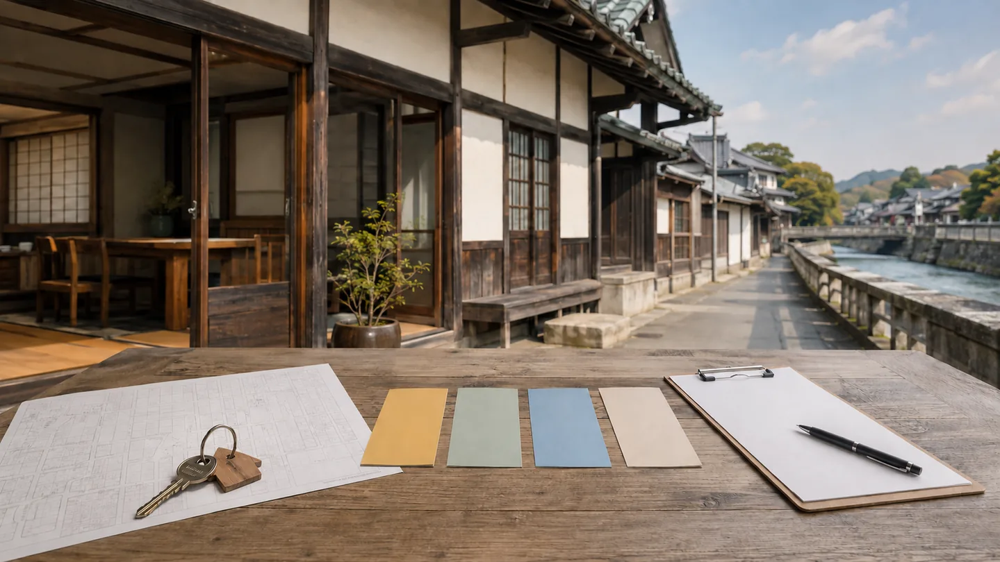
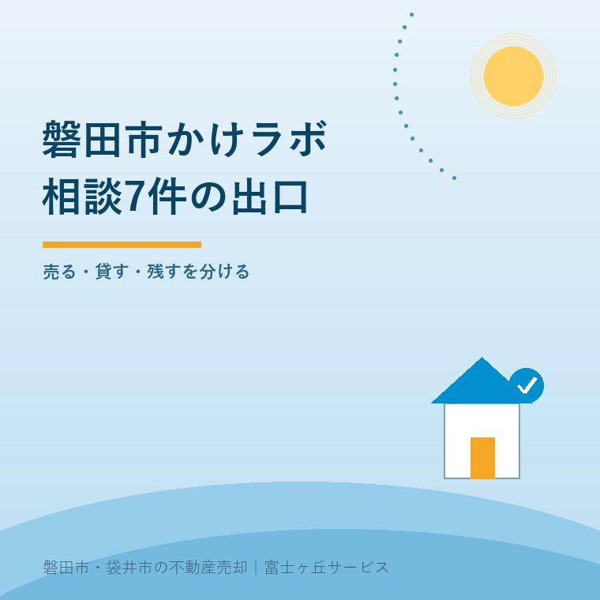

2026年9月5日｜カテゴリ：磐田市／掛塚／空き家相談


この記事の要点
Q. 磐田市かけラボの空き家相談7件は、売却や活用が決まった数ですか。
A. 7件は2025年度の新規相談数で、成約や活用開始の件数ではありません。公式に確認できる現状は「引き続き情報交換中」です。売却、賃貸、地域活用、保有のどこへ進むかは、物件条件と持ち主の希望を分けて見ます。
磐田市では、地域活用の相談と、不動産としての道路・境界・名義・価格の整理を並行する選択肢があります。
掛塚を含む磐田市内で空き家を持つ方にとって、「地域で使いたい人がいるなら残したい」という気持ちと、「維持費が続くなら売りたい」という家計は両方とも本音です。かけラボは、その間を考える入口です。
一方、2025年度の新規相談7件を、そのまま7軒の活用実績と読むことはできません。磐田市の公式ページを2026年9月5日に確認すると、7件は情報交換を続けている段階です。
かけラボの正式名は「かけつか から はじめる 空き家の魅力発信ラボ」です。磐田市は、空き家所有者や活用希望者からの相談対応、まち歩き、ワークショップ、情報発信を行う取り組みとして紹介しています。
従来枠では、磐田市掛塚1099番地1の旧津倉家住宅を地域おこし協力隊の活動拠点として使いました。公式ページに記された期間は、2025年10月15日から2026年3月31日までです。
掛塚は古い町家や商いの建物が残る地域です。住宅としての値段だけでは拾えない使い方がある一方、古い建物は接道、耐震、雨漏り、設備、改修費を見なければ、活用案だけが先に進みます。
売るか決めていない段階の相談で伝えることは、磐田市の空き家相談で最初に整理する項目にもまとめています。相談は売却依頼ではありません。
磐田市は、2026年度からのかけラボが「まちづくりのプラットフォームとしての役割」を担うと説明しています。空き家一軒の相談だけでなく、多様な関係者が地域の使い方を考える接点へ広げる方向です。
ワークショップで挙がった案には、飲食、地域交流、スポーツ・レジャー、移住・観光などがあります。空き家を住宅として売るだけでなく、地域の拠点として使う発想を持ち込める点は良いところです。
ただし、公式ページからは、2026年度も従来と同じ場所、相談窓口、運営体制がそのまま続くとは確認できません。旧津倉家住宅での従来枠は2026年3月31日までと明記されています。2026年度の相談方法は、利用前に磐田市へ確認が要ります。
磐田市の公式ページは、2025年度中に空き家所有者などから7件の新規相談があり、引き続き情報交換中と記しています。公表されていないのは、売却、賃貸、成約、改修、活用開始に至った件数です。
7件を成功7件とは数えません。相談の入口が7件あった事実は大切ですが、所有者の負担が減ったか、建物の管理が始まったか、使う人と条件が合ったかは別に確認する数字です。
相談7件は成果の大きさではありません。7件が売却・賃貸・管理・解体のどこへ進んだかが見えなければ、持ち主には次の一歩が分かりません。
これは体験ストックにある実話ではなく、私の意見です。私は宅地建物取引士として、相談件数より「次に誰が何を確認するか」が決まった件数を知りたい。相談から出口まで時間がかかる家もあるため、成約だけを急かすつもりはありません。
市の空き家バンクも別の入口です。2026年8月31日時点の掲載6件と申請条件は、磐田市の空き家バンク掲載状況で整理しています。かけラボの相談7件と、空き家バンクの掲載6件を足して13軒と数えることはできません。
かけラボの良い点は、売却、賃貸、地域利用の結論が出る前に相談できることです。活用希望者の声と、所有者の事情を同じ場へ持ち込めれば、不動産広告だけでは見つからない使い方が出る可能性があります。
もう一つの良い点は、掛塚という具体的な地域から始めていることです。古い建物の間取り、川沿いの町並み、近隣との関係は、地図上の価格だけでは分かりません。地域を歩き、使い方を考える手順には意味があります。
その上で、市の取り組みへ注文があります。個人を特定しない形で、相談後の状態を「現地確認」「所有者の希望整理」「活用希望者と調整」「管理継続」「売却・賃貸」「終了」などに分けて示してほしい。入口だけでなく、詰まる場所が見えれば、次の持ち主が相談しやすくなります。
私は、出口を細かく出すと相談者が特定されるおそれもあり、どこまで公表すべきか迷います。7件という小さな数では特に慎重さが要ります。それでも、合計だけでなく「情報交換中に何を確認しているか」は、個人情報を伏せて説明できると考えます。
空き家の出口を比べるとき、選択肢ごとに別の話を始める必要はありません。名義、道路、境界、建物状態、残置物、年間費用を共通資料にし、その後で売る・貸す・使う・残すを分けます。
| 出口 | 先に確認すること | 見落としやすい負担 |
|---|---|---|
| 売却 | 査定、媒介、名義、道路、境界 | 測量、片付け、登記、引渡し条件 |
| 賃貸 | 需要、賃料、修繕範囲、保険 | 初期工事、空室、設備故障、管理 |
| 地域活用 | 使う人、用途、期間、建築・消防の条件 | 改修費、運営者、近隣調整、撤退時の原状 |
| 保有継続 | 家族の利用予定、管理担当、点検頻度 | 固定資産税、保険、草木、雨漏り |
| 解体 | 解体見積り、残置物、登記、土地の出口 | 解体後の税負担、再建築、売却時期 |
市や空き家バンクへ持参する資料は、空き家バンク相談前に揃えるもので確認できます。権利証が見つからなくても、納税通知書、地番、鍵、室内外の写真から始められます。
売却を選ぶ場合、地域の相談件数から価格は決まりません。磐田市の中古住宅を全国・中部の販売量指数から読む限界は、磐田市の中古住宅売却と2026年5月の動きに書きました。価格は近隣成約、築年、接道、境界、建物状態へ戻して査定します。
掛塚の空き家について今日できる確認は、売るか残すかを決めることではありません。固定資産税の納税通知書を開き、土地と建物の地番、名義、家屋番号を一枚に書くことです。
富士ヶ丘サービスでは、磐田市に絞った地域密着の不動産会社として、道路、境界、名義、残置物を査定前に確認します。介護と相続が重なるご家族には、家を残した場合の管理と、売った場合の段取りを同じ表で案内します。「家族が困らない売却」は、地域活用を否定することではありません。
今日、かけラボか不動産会社のどちらか一方に決めなくてよいのです。地域での使い方はかけラボへ、売買条件と価格は不動産会社へ確認できます。税務、登記、相続、建築の個別判断は、それぞれの専門家へつなぎます。
いいえ。磐田市の公式ページが公表しているのは、2025年度中の新規相談が7件あったことです。7件は引き続き情報交換中とされ、売却、賃貸、成約、活用開始に至った件数は示されていません。相談受付数と出口が決まった数を分けて読んでください。
公式ページは、2026年度からまちづくりのプラットフォームを担うと説明していますが、従来と同じ場所・体制で相談を続けるとは明記していません。旧津倉家住宅での従来枠は2026年3月31日までです。最新の相談方法と場所は磐田市へ確認してください。
地域での活用案や使いたい人との接点は、かけラボへ確認する意味があります。売却価格、媒介、名義、道路、境界、契約条件は不動産会社や各専門家の領域です。売るか未定でも、地域活用の希望と物件条件を分け、必要に応じ両方へ相談できます。

この記事を書いた人：大石浩之（宅地建物取引士）
大石浩之（磐田市／不動産業）。掛塚を含む磐田市の空き家について、地域で使う可能性と売却・賃貸・保有の条件を分けて案内しています。プロフィール
磐田市・掛塚の空き家相談
地域活用と売却条件を、同じ表で比べる
売るか残すか未定でも、道路・境界・名義・年間費用を整理します。税務・登記・相続・建築の個別判断は各専門家へつなぎます。
本記事は2026年9月5日時点の公表資料に基づく一般的な説明です。かけラボの相談方法、場所、運営体制、物件の活用可否、売買・賃貸条件は変わる場合があります。税務・登記・相続・建築の個別判断は税理士、司法書士、弁護士、建築士などの専門家に確認してください。
富士ヶ丘サービス株式会社／静岡県磐田市見付5789番地1／TEL:0538-31-3308／静岡県知事 (2) 第14083号／代表取締役・宅地建物取引士 大石 浩之